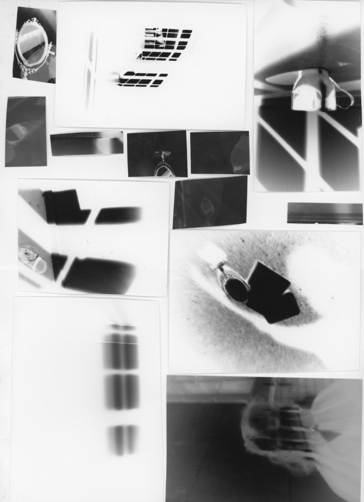
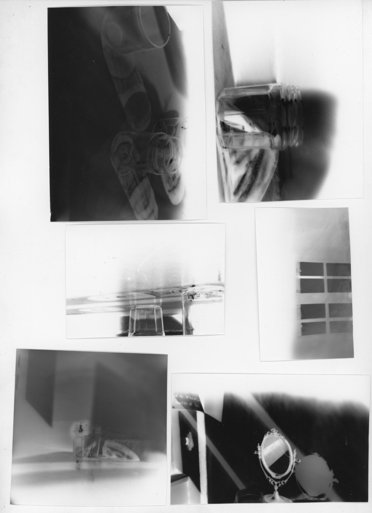
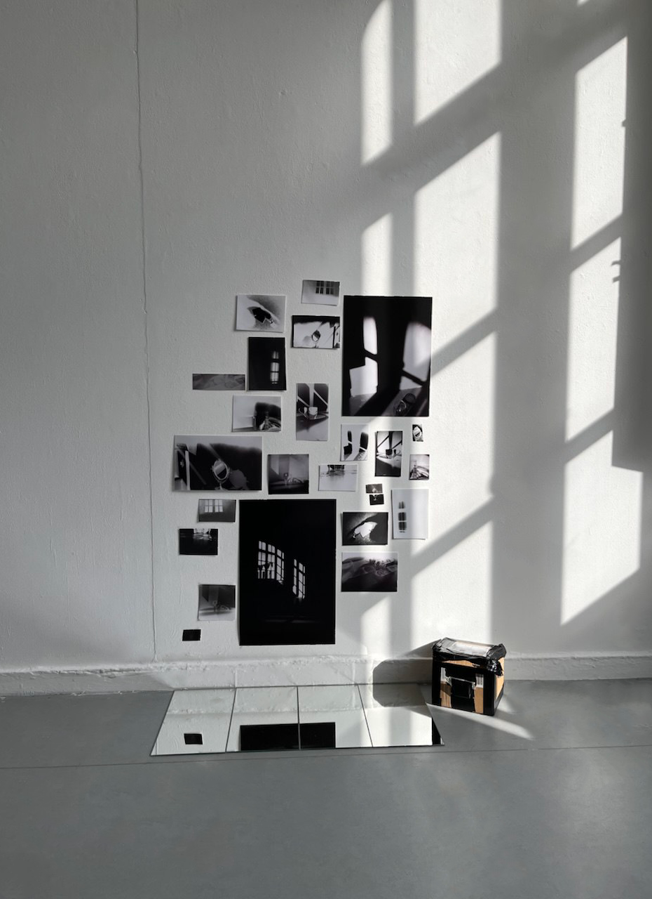
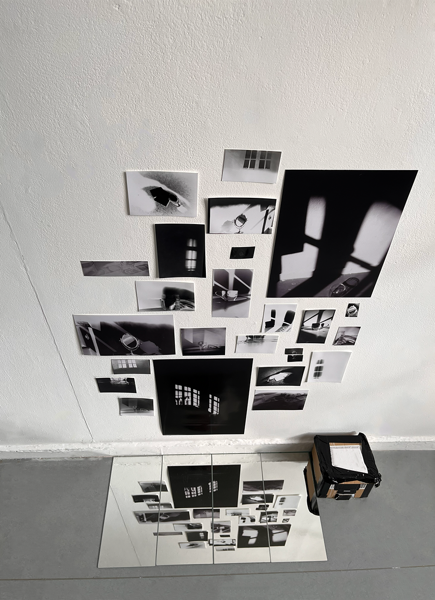

Sténopé Lumière
STÉNOPÉ:
LUMIÉRE
REFLETS
TRANSPARENCE
Le projet consiste à expérimenter la photographie au sténopé à partir de boîtes fabriquées en carton. L’objectif était de comprendre le principe de la camera obscura et d’explorer les possibilités de l’image obtenue sans objectif.




Le travail s’est concentré sur l’observation de la lumière, des reflets, des ombres et des effets de transparence. Les prises de vue mettent en scène des natures mortes composées de verres, de miroirs et de fenêtres, afin d’étudier les interactions entre les surfaces et la lumière.